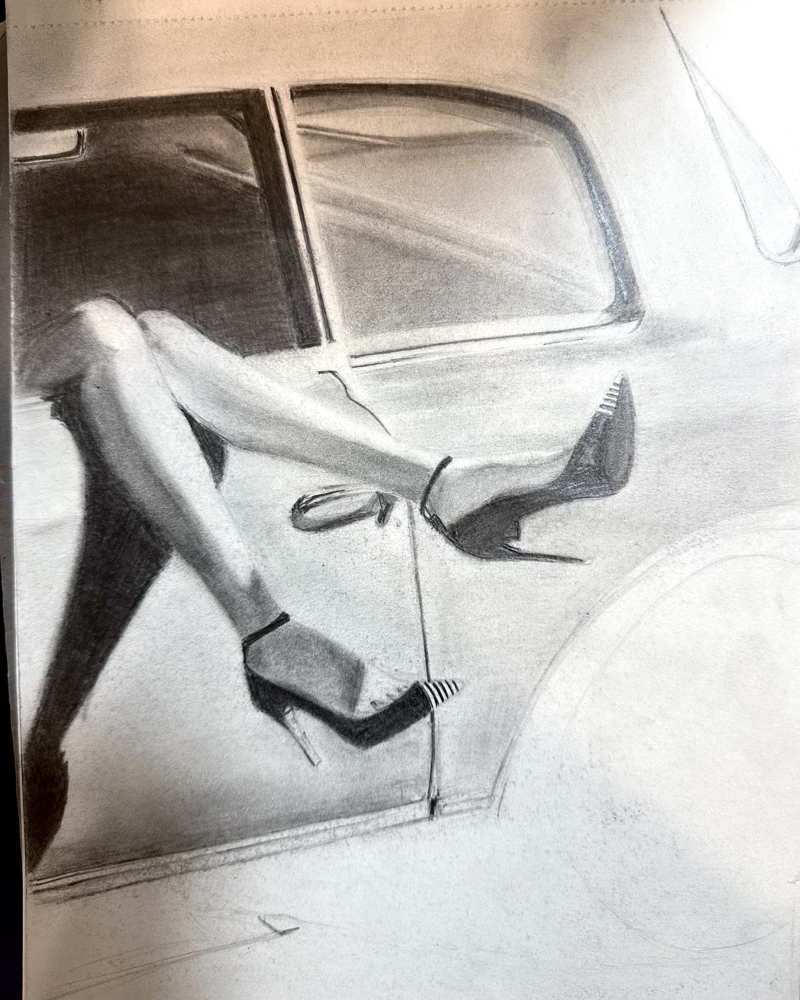
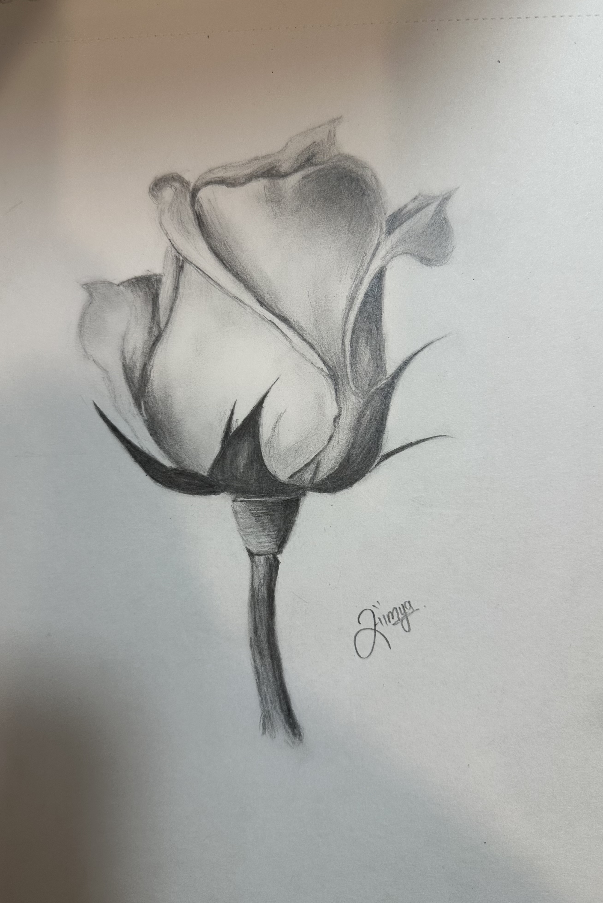

About me
Saumya Mehta
I'm a product designer currently studying Human-Computer Interaction, with a background that spans research, interaction design, and visual craft. I design for every stakeholder in the room — the people using the product, and the business that has to sustain it — because a solution that only serves one of them isn't finished.
I start with the system and then the pixels, and neither one gets the leftovers.
My journey
Hi, I am Saumya Mehta. My journey started from Sanskrit and led me to pursue HCI. Learning Sanskrit wasn't just linguistics, but it was an immersion into a world of literature, philosophy and rigid grammatical logic. This background helped me develop an interdisciplinary mindset — to look at every aspect of a system, be it computer systems or societal systems. It challenged me to look deeper and ask "why"? It developed a research-driven, problem solving mindset in me. Even though my love for Sanskrit and literature has never lessened, I strongly felt that there must be a field where I can combine my problem solving skills and creativity, and I came across HCI — which seemed a perfect fit for me.
After my undergraduate studies I dedicated a year to learn fundamentals of UI/UX and did a specialized Diploma in UI/UX. This path led me to work at two valuable internships, where I got a chance to apply my problem solving skills to the real world.
My goals
I am currently pursuing a master's degree in Human-Computer Interaction at Drexel University. I aspire to gain more experience in UX design and product design. My goal is to eventually move to managerial and leadership roles, where I can lead my team to design human-centred and sustainable solutions.
Skills
Contact Me
Have a project in mind or just want to say hi? Reach out through either of these.
My hobbies: Sketching, reading, hiking, travelling

